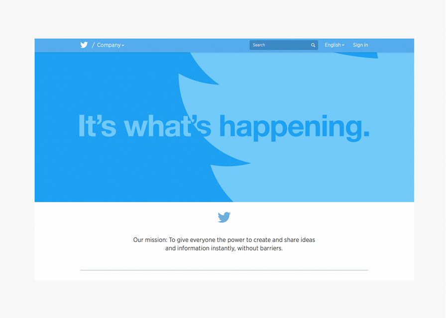
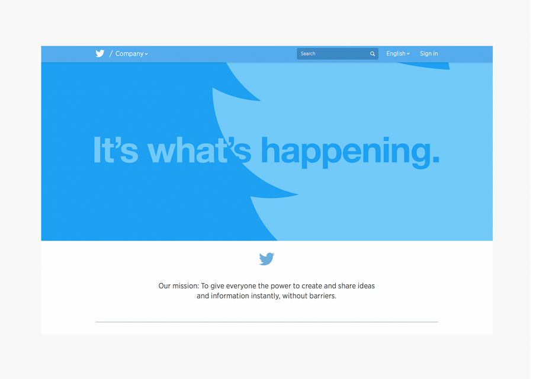

The decidedly unglamorous origins of Fashion Instagrammers can be found in early blogging communities and online forums, where a technological inclined subculture began cultivating a fashionable Internet alcove. Characterized by their aggressively opinionated and crude commentary, blogs like Fashin Fags cultivated dialogues outside the boundaries of traditional publishing, becoming “a platform for erudite, acid-tongued fashion fans to school each other on modeling’s fresh new faces, advertising campaigns and histories of the biggest brands”. This unpolished approach still carries on with Instagram bloggers today, who actively curate content that conflicts with the sophisticated aesthetic of fashion journalism.
Unsurprisingly, Instagram’s value is primarily visual, and can be traced back to the introduction of Flickr in 2004. With the popularization of this large image repository, bloggers were able to increasingly incorporate more and more photos alongside text, and create more engaging and formally pleasing content. And while early fashion bloggers still relied on text and written commentary, with long-form written posts only rarely punctuated by images, Instagrammers now take full advantage of the platform’s affinity for ‘selfies’ and outfits posts.
Following this development, the beginning of Twitter in 2006 further enabled fashion bloggers, establishing the networking potentials of #hastags and tagging. Ubiquitously used by bloggers, #hastags offer bloggers the invaluable asset to connect their content within an entire network of other similarly inclined prosumers Coined by Alvin Toffler in 1980, explains a amalgamation of consumer and producer tendencies in a post-industrial societies, where the prosumer actively works to produce the services and goods they buy and consume. helping them collaborate and discover new audiences. As will be further explored, this networking capability plays an integral role in the economic architecture of Instagram.